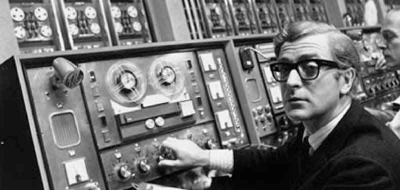
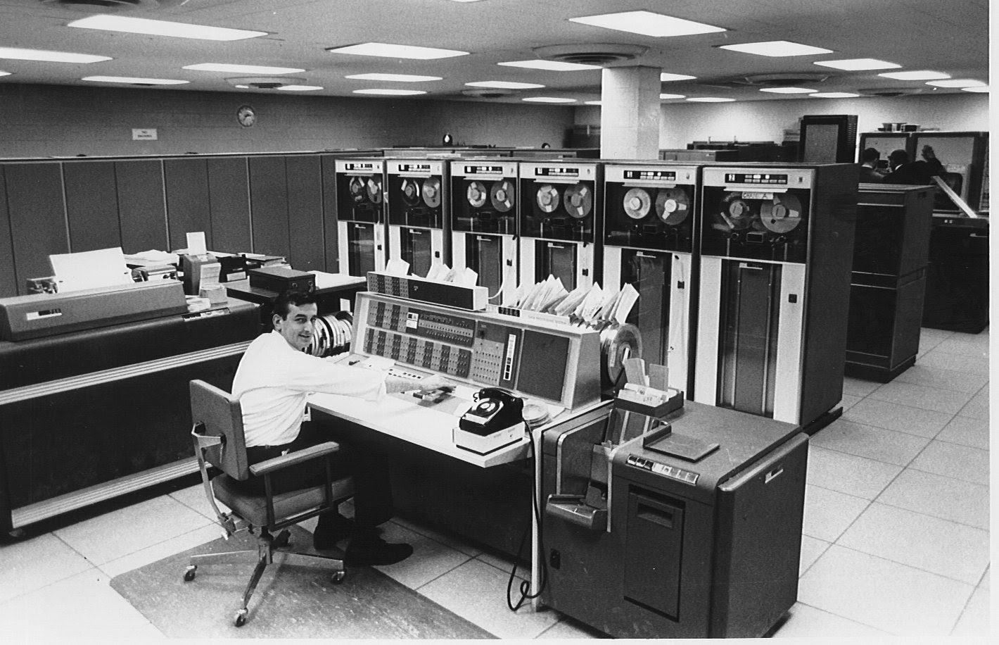
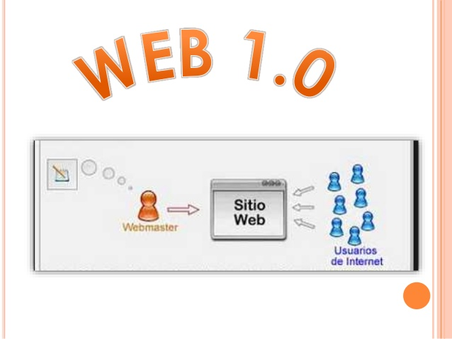
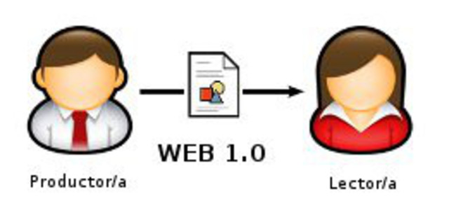
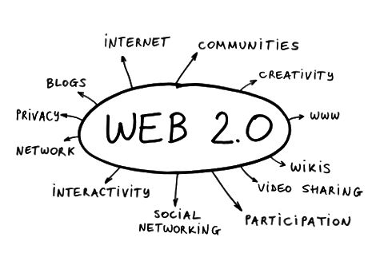
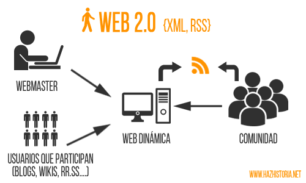
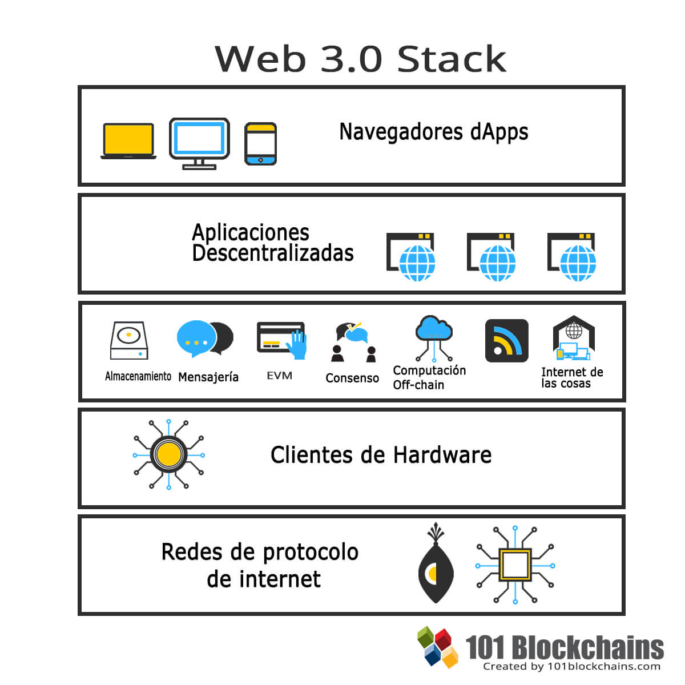
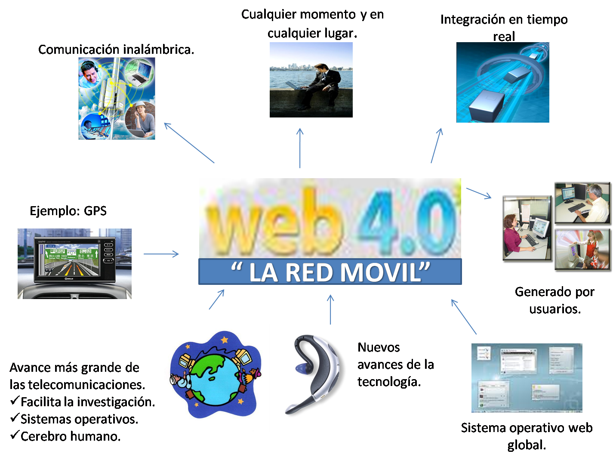

Evolucion de la Web
| Hito |
Hechos |
Imagenes |
Referencias |
| Internet |
En la ingeniería de software se denomina aplicación Web a aquellas herramientas que los usuarios pueden utilizar accediendo a un servidor Web a través de Internet o de una intranet mediante un navegador |
 |
 |
Historia y Evolucion de Internet |
| Web 1.0 |
- Es en general un término usado para describir la Web antes del impacto de la «fiebre punto com» en el 2001, que es visto por muchos como el momento en que el internet dio un giro
- Las primeras páginas que vimos en Internet publicaban contenidos de texto que, una vez publicados, no se actualizaban salvo que el "webmaster" modificase dichos contenidos y volviese a subir la web de nuevo a internet.
|
 |
 |
Web 1.0 |
| Web 2.0 |
- La web 2.0 representa la evolución de las aplicaciones convencionales a aplicaciones que se dirigen al usuario final. En otras palabras, cuando se habla de web 2.0 no se está hablando de un sistema tecnológico propiamente dicho, sino que se habla de una actitud. Dicho término se utilizó por primera vez en el año 2004 y desde entonces su utilización no ha dejado de crecer.
- La web 2.0, o web social ➡ sitios web que facilitan el compartir información. Con diseño para el usuario, con usabilidad al detalle para que todo resulte fácil.
|
 |
 |
¿Que es y para que sirve la web 2.0? |
| Web 3.0 |
Web 3.0 o web semántica, creado por la investigadora y líder de innovación mexicana Norma Lizeth Ortiz García en conjunto con un grupo de investigadores de Google Academy External Consultants y es una expresión que se utiliza para describir la evolución del uso y la interacción de las personas en internet a través de diferentes formas entre las que se incluyen la transformación de la red en una base de datos, |
 |
 |
Web 3.0 |
| Las tecnologías de la Web 3.0, como programas inteligentes, que utilizan datos semánticos, se han implementado y usado a pequeña escala en compañías para conseguir una manipulación de datos más eficiente. En los últimos años, sin embargo, ha habido un mayor enfoque dirigido a trasladar estas tecnologías de inteligencia semántica al público general. |
| Web 4.0 |
- Web 4.0 es una capa de integración necesaria para la explotación de la Web semántica y sus enormes posibilidades. Es un nuevo modelo de Internet que nace con el objetivo de resolver las limitaciones de la red a día de hoy.
- Web 4.0 es una capa de integración necesaria para la explotación de la Web semántica y sus enormes posibilidades.
|
 |
 |
Web 4.0 |